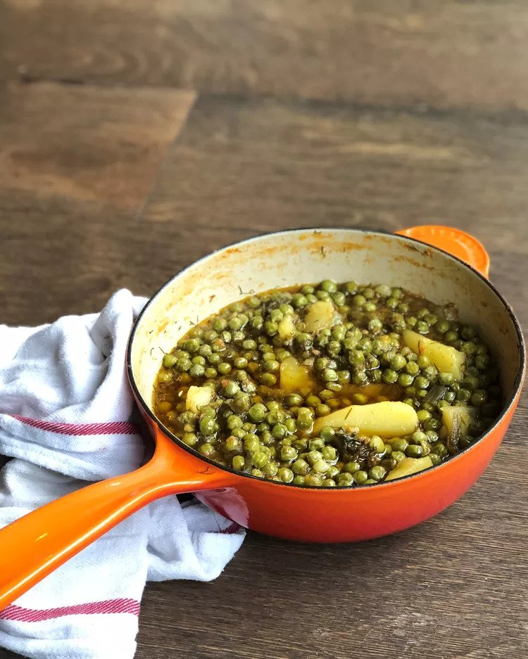

Arakas Latheros (Greek Peas with Tomato and Dill)

Peas are usually considered a side dish, but it is common to eat a plate full of vegetables as a main course in Greece. This traditional way of cooking peas is so satisfying and healthy that it will certainly become a favorite. Serve these Greek peas with crusty bread and feta for the ultimate meal!
Prep Time: 10 mins
Cook Time: 40 mins
Total Time:50 mins
Servings: 4
Ingredients
- 3 tablespoons olive oil
- 6 green onions, chopped
- 1 (16 ounce) package frozen peas
- 1 cup crushed tomatoes
- 1 potato, peeled and cut into wedges
- ½ cup chopped fresh dill
- salt and ground black pepper to taste
- ½ cup water, or as needed (Optional)
Directions
- Heat olive oil in a saucepan over medium heat, Cook and stir onions in hot oil until soft but not browned, about 5 minutes. Add peas, tomatoes, potato, dill, salt, and pepper. Add water if there is not enough liquid from tomatoes.
- Stir thoroughly and bring to a boil. Lower heat and cook, partially covered, until peas and potato are soft, about 30 minutes. Make sure that any remaining water from tomatoes has evaporated before serving.